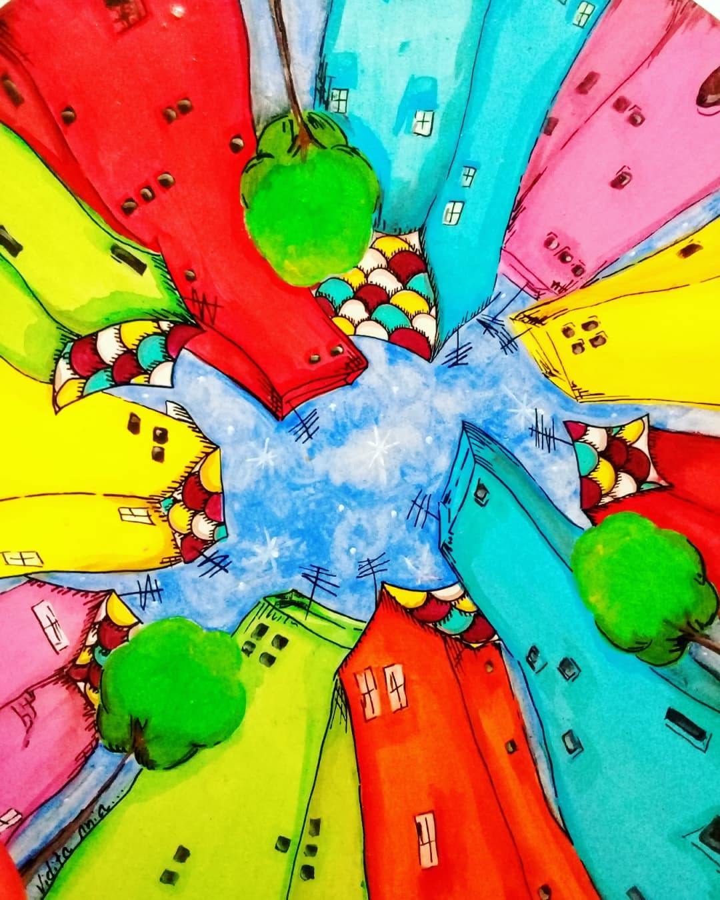
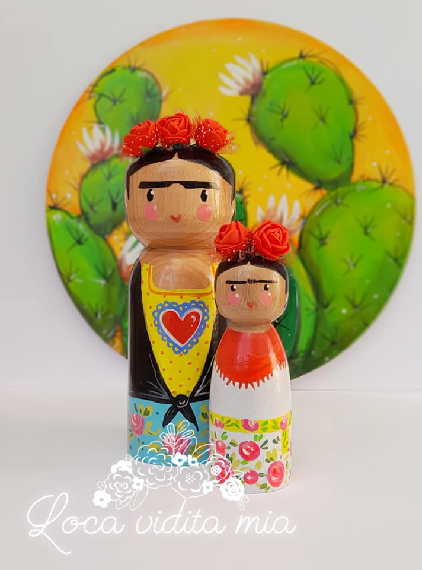
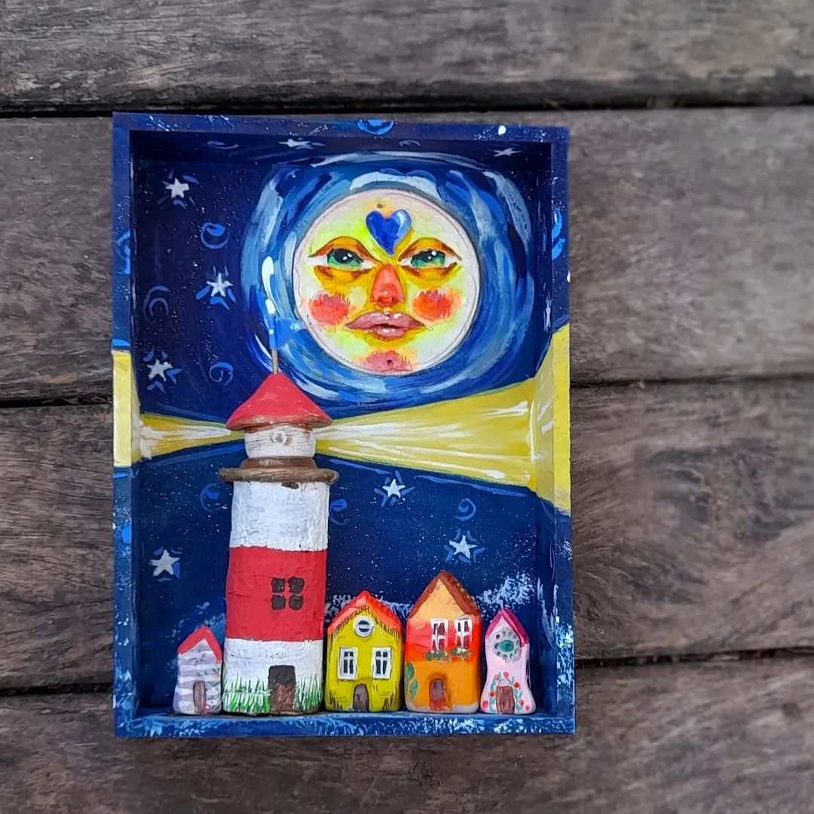
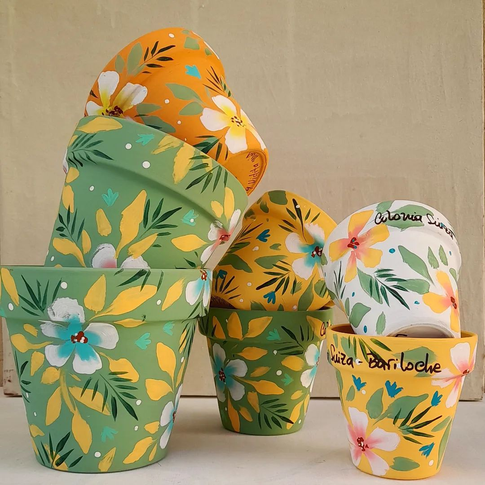
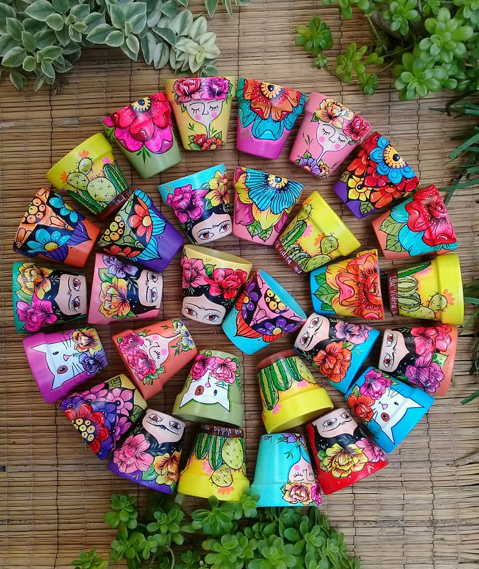
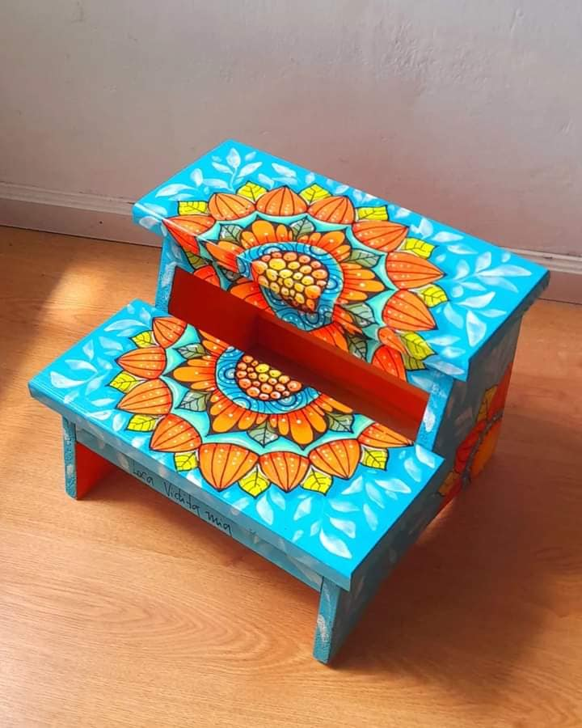
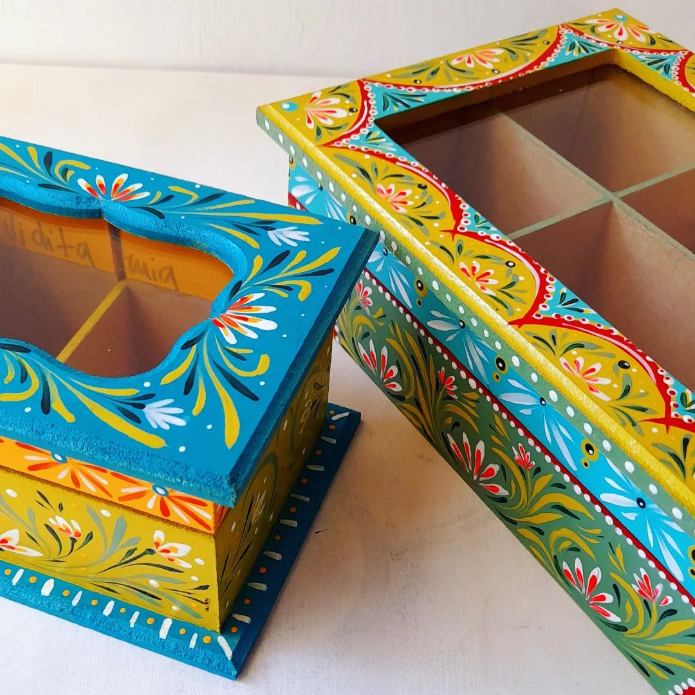

Un emprendimiento que nace en el 2010
Esta galería es la muestra de algunos trabajos realizados a diferentes clientes.
Loca Vidita Mia surge de la necesidad de trabajar habiéndome convertido en madre
y desempleada casi al mismo tiempo.
Según dicen "No hay mal que por bien no venga", gracias a ser despedida y como mencioné anteriormente,
era madre de un recién nacido; la situación me forzó a buscar algún fuerte
para poder generar ingresos sin salir del hogar y cuidar a mi hijo.








